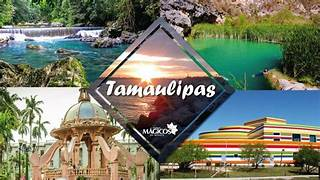
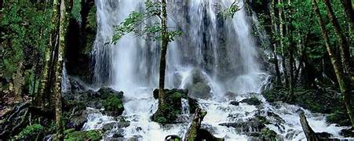
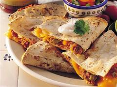
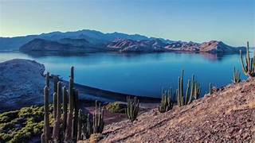

La capital de Tamaulipas es Ciudad Victoria y su ciudad más poblada es Reynosa. Este estado mexicano está ubicado en el noreste del país, limitando al norte con los Estados Unidos, siendo la frontera el famoso río Bravo.

Tamaulipas cuenta con una gran diversidad de ecosistemas, desde playas paradisíacas en el Golfo de México hasta extensas zonas desérticas en el norte. Además, alberga áreas protegidas como la Reserva de la Biosfera El Cielo y el Parque Nacional Lagunas de Altamira, donde se pueden apreciar especies endémicas de fauna y flora.

Uno de los platos más representativos de Tamaulipas es el asado de puerco, un delicioso platillo que consiste en carne de cerdo adobada y cocinada lentamente. Otro manjar tradicional es el cabrito, una preparación de carne de cabra asada que se caracteriza por ser tierna y jugosa.Tambien la tortilla de harina es un elemento indispensable en la cocina tamaulipeca. Se utiliza para preparar diferentes antojitos, como quesadillas, burritos y sincronizadas, que se pueden rellenar con una gran variedad de guisos y quesos.

Tamaulipas cuenta con una gran diversidad de ecosistemas, desde playas paradisíacas en el Golfo de México hasta extensas zonas desérticas en el norte. Además, alberga áreas protegidas como la Reserva de la Biosfera El Cielo, Laguna Madre y el Parque Nacional Lagunas de Altamira, donde se pueden apreciar especies endémicas de fauna y flora.

Notas relevantes:
El nombre de Tamaulipas proviene de la lengua huasteca, y significa "lugar donde se
juntan las aguas". Esto se debe a que en esta región convergen varios ríos y arroyos que forman importantes
cuerpos de agua como el río Bravo y la laguna Madre.
Tamaulipas es uno de los principales productores de
petróleo en México. La industria petrolera ha tenido un impacto significativo en la economía del estado,
atrayendo inversiones y generando empleo, aunque también ha sido objeto de controversia debido a preocupaciones
ambientales y sociales.